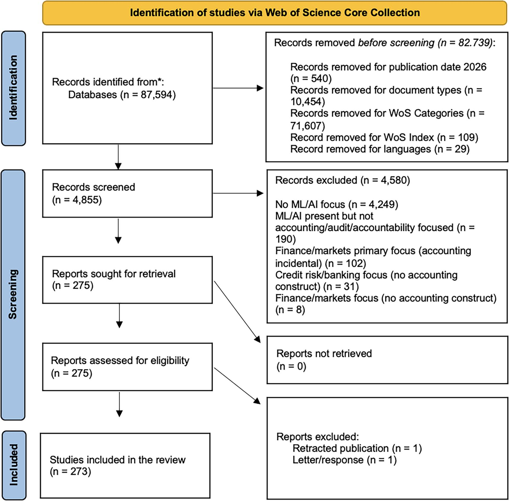
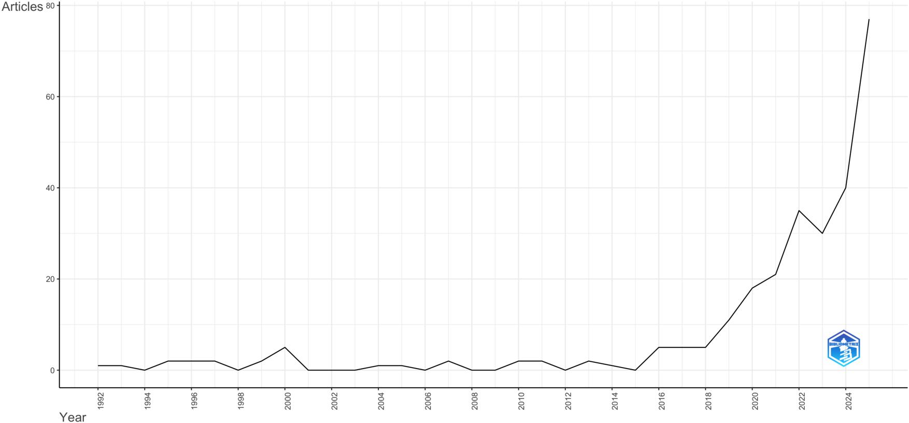
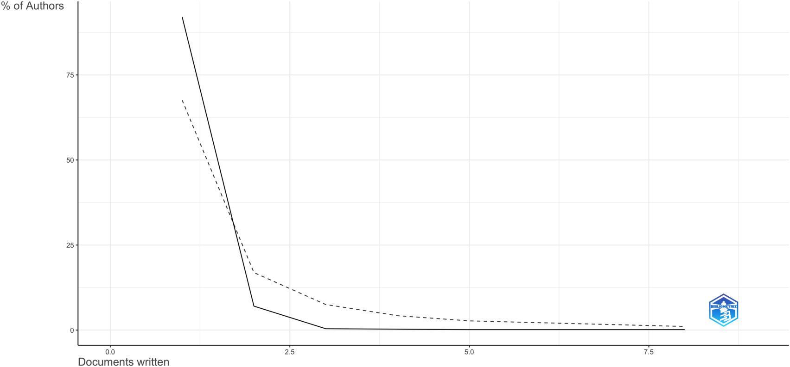
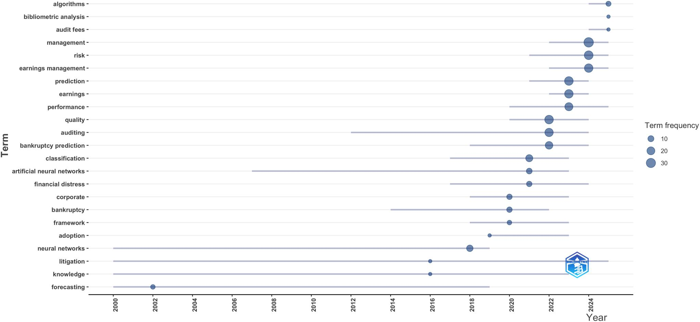
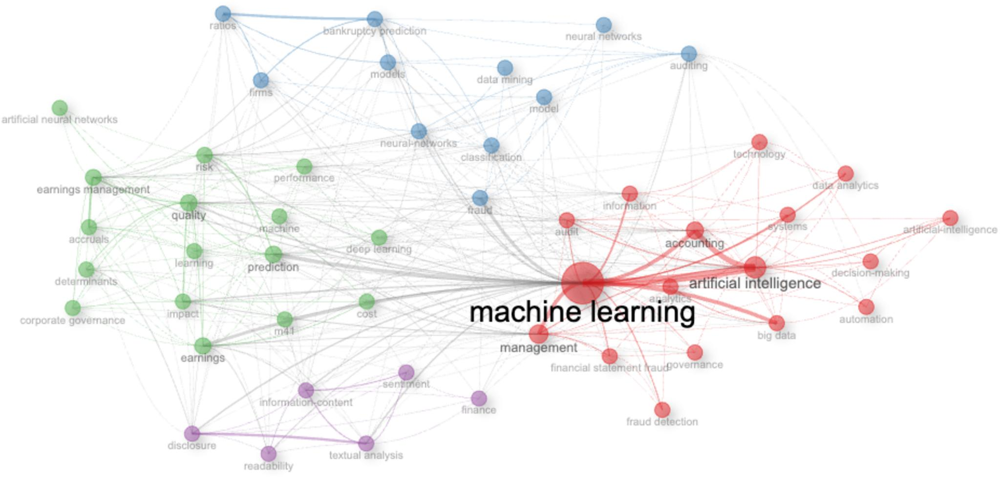
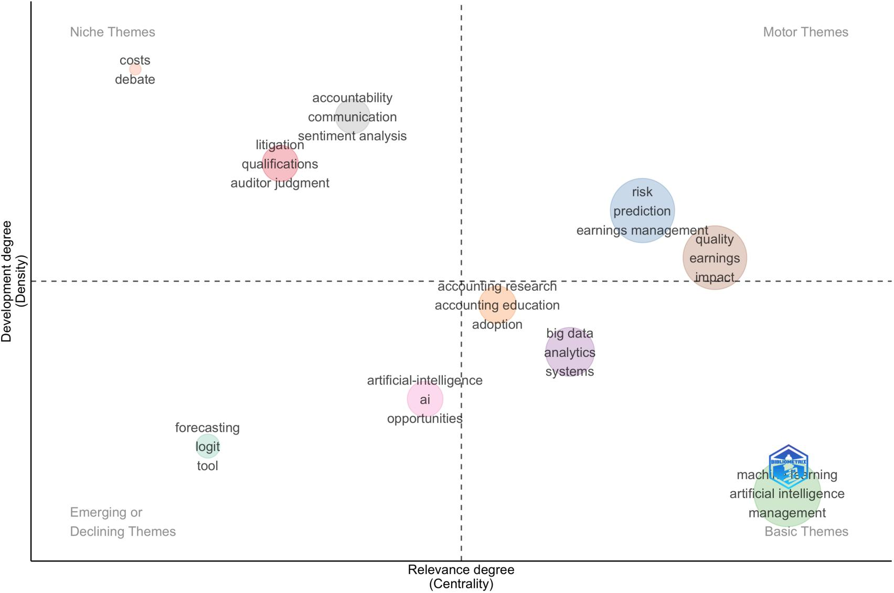
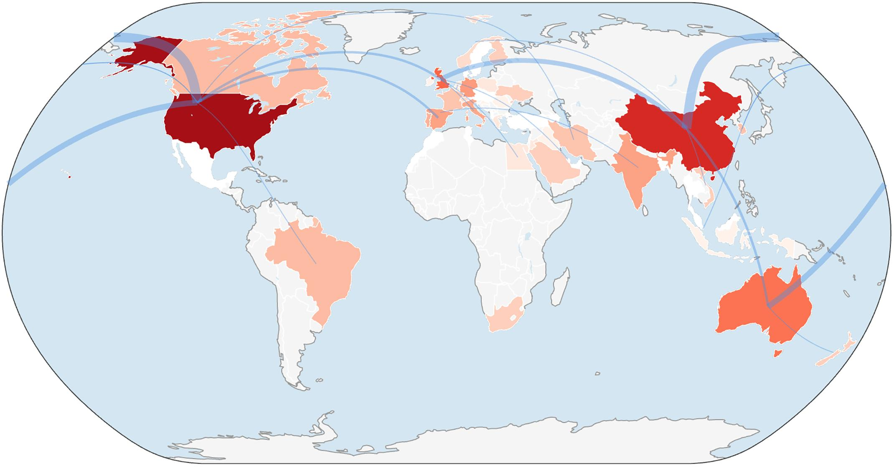

Ứng Dụng Học Máy Trong Kế Toán: Xu Hướng Hiện Tại và Triển Vọng Tương Lai
(Original Title: Applications of Machine Learning in Accounting: Current Trends and Future Perspectives)
Học máy (Machine Learning - ML) ngày càng được ứng dụng rộng rãi nhằm phát hiện gian lận, dự báo kiệt quệ tài chính, phân tích công bố thông tin và hỗ trợ công tác kiểm toán. Các nghiên cứu tổng quan trước đây thường lập bản đồ các ứng dụng hoặc phương pháp kỹ thuật đơn lẻ nhưng hiếm khi kết nối các bài toán nghiệp vụ kế toán với các quyết định thiết kế, kiểm chứng và quản trị mô hình ML. Chúng tôi đã thực hiện tổng quan hệ thống trên 273 bài báo bình duyệt thuộc danh mục Web of Science Core Collection xuất bản từ năm 1992 đến năm 2025, kết hợp giữa bản đồ khoa học trắc lượng thư mục (Bibliometric Science Mapping) với khung tổng hợp Tiền đề - Quyết định - Kết quả (Antecedents-Decisions-Outcomes - ADO) được bồi đắp qua lăng kính Lý thuyết - Bối cảnh - Phương pháp (Theory-Context-Method - TCM). Y văn tập trung thành các cụm xung quanh việc dự báo phá sản & kiệt quệ tài chính, chất lượng báo cáo và gian lận, được kết nối xuyên suốt thông qua phân tích dữ liệu kiểm toán và phân tích văn bản. Việc áp dụng ML được thúc đẩy chủ yếu bởi áp lực chứng thực (Assurance Pressure), thông tin phi cấu trúc và dữ liệu quy trình kỹ thuật số. Tuy nhiên, phần lớn các nghiên cứu hiện nay vẫn dựa dẫm quá mức vào các chỉ số thiên về độ chính xác thuần túy (Accuracy-oriented metrics), kiểm chứng phi thời gian (Nontemporal validation) và khả năng giải trình mang tính "báo cáo cho có" chứ chưa được kiểm thử trong thực tế. Chúng tôi chỉ ra cách thức các điều kiện kế toán cần phải rèn giũa quy trình đánh giá ML và đề xuất một chương trình nghị sự nghiên cứu hướng tới mô hình ML nhạy cảm với chi phí (Cost-aware), vững chắc theo thời gian (Temporally robust) và có thể quản trị, kiểm soát được trong kế toán.
Học máy (ML) hiện nay đóng vai trò vô cùng quan trọng đối với ngành kế toán - kiểm toán, vừa là một công cụ thực tiễn mạnh mẽ để giải quyết các khối lượng bằng chứng khổng lồ và không đồng nhất, vừa là một đối tượng nghiên cứu học thuật sâu sắc nhằm thấu hiểu cách thức các mô hình điều khiển bằng dữ liệu tác động đến phán đoán nghề nghiệp, hoạt động chứng thực và chất lượng báo cáo tài chính. Các hệ sinh thái doanh nghiệp (ERP) tạo ra các dấu vết giao dịch chi tiết, nhật ký kiểm soát quy trình và siêu dữ liệu vận hành ở cấp độ từng dòng nghiệp vụ; trong khi đó, báo cáo doanh nghiệp là sự kết hợp phức hợp giữa báo cáo số liệu định lượng với các thuyết minh tường thuật, báo cáo kiểm toán và các tài liệu chứa đầy ngôn ngữ tự nhiên. Trong môi trường này, ML — một nhánh con định hướng dữ liệu của Trí tuệ nhân tạo (AI) — đã được áp dụng để giải quyết những tác vụ mà quy mô, tính không đồng nhất và mối quan hệ phi tuyến tính vượt qua năng lực của các phương pháp phân tích truyền thống (Jordan và Mitchell 2015; Bhimani và Willcocks 2014).
Trong nghiên cứu kế toán, các ứng dụng của ML đã mở rộng từ các mục đích dự báo ban đầu (như sàng lọc kiệt quệ tài chính và gian lận) sang một phổ ứng dụng phong phú hơn rất nhiều: phát hiện sai sót trọng yếu, phân tích dữ liệu kiểm toán chuyên sâu, và khai phá văn bản đối với các thuyết minh tài chính cùng các vấn đề kiểm toán quan trọng (Key Audit Matters - KAMs) (Perols 2011; Hayes và Boritz 2021; Bao et al. 2020).
Đồng thời, bối cảnh đặc thù của kế toán đặt ra những ràng buộc vô cùng khắt khe làm phức tạp hóa quá trình chuyển hóa từ hiệu suất dự báo kỹ thuật thành giá trị ra quyết định thực tế. Đầu ra của mô hình ML thường hỗ trợ phán đoán chuyên môn của kế toán viên và kiểm toán viên dưới các điều kiện: chi phí sai số bất đối xứng (Asymmetric error costs), sự phụ thuộc chặt chẽ theo thời gian (Temporal dependence), và yêu cầu nghiêm ngặt về trách nhiệm giải trình đòi hỏi tính tài liệu hóa, khả năng tái lập và tính thẩm tra được (Bertomeu 2020; Zhang et al. 2022).
Để giải quyết triệt để các hạn chế trên, công trình tiên phong kết hợp giữa Khung tổng hợp ADO (Antecedents - Decisions - Outcomes) với lăng kính TCM (Theory - Context - Method):
Nghiên cứu áp dụng quy trình tổng quan y văn có cấu trúc (Structured Literature Review - SLR) kết hợp chặt chẽ theo hướng dẫn chuẩn quốc tế PRISMA 2020 (Page et al., 2021) trên cơ sở dữ liệu học thuật uy tín nhất thế giới: Web of Science Core Collection (WoSCC).

| Chỉ Tiêu Thống Kê Dữ Liệu (WoSCC 1992 - 2025) | Giá Trị Ghi Nhận | Ý Nghĩa Học Thuật Trong Kế Toán & Kiểm Toán |
|---|---|---|
| Khung thời gian nghiên cứu (Timespan) | 1992 – 2025 | 34 năm phát triển từ mạng nơ-ron sơ khai đến XAI và LLM hiện đại. |
| Tổng số công trình bình duyệt chính thức (Documents) | 273 bài báo | Bộ ngữ liệu chuẩn mực, chất lượng cao nhất được lọc qua các tiêu chí khắt khe. |
| Số lượng tạp chí học thuật tham gia (Sources) | 125 tạp chí | Độ phân tán rộng khắp, hội tụ ở các tạp chí hàng đầu về Hệ thống thông tin kế toán (AIS). |
| Tốc độ tăng trưởng sản lượng hàng năm (Annual Growth Rate) | 11.45% | Tốc độ phát triển bùng nổ, đặc biệt tăng mạnh sau năm 2018. |
| Số lượng tác giả đóng góp (Authors) | 753 nhà khoa học | Trung bình 3.04 đồng tác giả/bài, 26.37% có hợp tác quốc tế. |
| Số lượt trích dẫn trung bình trên mỗi bài (Avg Citations/Doc) | 21.16 lần | Tác động học thuật rất vững chắc trong một lĩnh vực liên ngành tương đối trẻ. |
Lịch sử phát triển của Machine Learning trong kế toán có thể chia làm 3 làn sóng rõ rệt: Giai đoạn ươm mầm (1992 - 2010) với các thử nghiệm dự báo phá sản bằng mạng nơ-ron; Giai đoạn định hình (2011 - 2017) với hồi quy Logistic, SVM và Random Forest; và Giai đoạn bùng nổ (2018 - 2025) với học sâu, khai phá quy trình và xử lý ngôn ngữ tự nhiên.

Các bài báo phân bố tập trung tại các tạp chí đầu ngành về hệ thống thông tin kế toán (AIS): dẫn đầu là International Journal of Accounting Information Systems (IJAIS) với 18 bài, tiếp theo là Journal of Information Systems (JIS) với 13 bài, và các tạp chí kế toán danh giá như The Accounting Review (TAR) (7 bài), Accounting Horizons (AH) (7 bài), Contemporary Accounting Research (CAR) (6 bài).

Phân tích tiến hóa chủ đề (Trend Topics) qua các giai đoạn cho thấy sự chuyển hướng căn bản từ các thuật toán phân loại hộp đen truyền thống sang các chủ đề hiện đại: Xử lý ngôn ngữ tự nhiên (NLP) phân tích báo cáo thường niên 10-K, Khai phá văn bản (Text mining), và Học máy giải trình (Explainable AI - XAI).


Bản đồ chủ đề (Thematic Map) phân chia y văn thành 4 góc phần tư dựa trên hai trục: Mật độ phát triển nội tại (Density) và Mức độ liên kết bên ngoài (Centrality).


Đóng góp học thuật chấn động nhất của công trình nghiên cứu trên Journal of Information Systems nằm ở việc bóc trần 3 sai lầm phương pháp luận phổ biến mà rất nhiều nghiên cứu ứng dụng ML trong kế toán - kiểm toán hiện nay đang mắc phải:
Trong kỹ thuật máy học thuần túy, các nhà nghiên cứu thường tối ưu hóa Accuracy (Độ chính xác) hoặc AUC-ROC, ngầm định rằng sai số Loại I (False Positive - Báo động giả) và sai số Loại II (False Negative - Bỏ lọt gian lận/phá sản) có mức độ thiệt hại ngang bằng nhau ($C_{FP} = C_{FN}$).
Thực tế kiểm toán: Đây là một sai lầm chết người! Nếu kiểm toán viên gắn cờ nhầm một giao dịch hợp lệ (False Positive), chi phí chỉ là mất thêm 15 phút rà soát thủ công ($C_{FP}$ nhỏ). Nhưng nếu mô hình bỏ lọt một vụ gian lận báo cáo tài chính hàng triệu USD (False Negative), hậu quả là kiện tụng phá sản, mất giấy phép hành nghề và sự sụp đổ của công ty kiểm toán ($C_{FN}$ lớn gấp hàng trăm đến hàng nghìn lần). Do đó, việc khoe khoang một mô hình đạt "99% Accuracy" trên dữ liệu mất cân bằng là hoàn toàn vô nghĩa và độc hại. Bắt buộc phải áp dụng Cost-Sensitive Learning (Học máy nhạy cảm chi phí) và tối ưu hóa theo ma trận tổn thất kinh tế thực tế!
Rất nhiều bài báo áp dụng phương pháp chia mẫu ngẫu nhiên truyền thống (Random $K$-fold cross-validation hoặc 80/20 random train-test split). Điều này đồng nghĩa với việc lấy dữ liệu năm 2024 để "huấn luyện" mô hình dự đoán cho các báo cáo tài chính năm 2021!
Thực tế kiểm toán: Dữ liệu kế toán mang tính chuỗi thời gian chặt chẽ và chịu tác động của chu kỳ kinh tế, thay đổi chế độ kế toán và lạm phát. Việc chia mẫu ngẫu nhiên dẫn đến hiện tượng Rò rỉ thông tin tương lai (Information Leakage / Look-ahead Bias), tạo ra độ chính xác ảo trên bài báo nhưng khi đưa vào thực tế kiểm toán sẽ thất bại thảm hại. Nghiên cứu yêu cầu bắt buộc phải sử dụng phương pháp Kiểm chứng cửa sổ cuốn theo thời gian (Rolling-window / Expanding-window temporal validation): chỉ được dùng dữ liệu quá khứ $t-1$ để dự báo cho thời điểm $t$.
Gần đây, các tác giả thường thêm vào bài viết một vài biểu đồ tầm quan trọng của biến (Feature Importance) hoặc giá trị SHAP (SHapley Additive exPlanations) và tuyên bố rằng mô hình của họ "hoàn toàn có thể giải trình được" (Explainable AI - XAI).
Thực tế kiểm toán: Một biểu đồ SHAP trừu tượng không có giá trị gì nếu kiểm toán viên hiện trường không thể hiểu và không thể dùng nó làm bằng chứng biện minh trước Hội đồng kiểm toán hoặc cơ quan quản lý (PCAOB, SEC, Bộ Tài chính). Tính giải trình phải được kiểm nghiệm thực tế trong môi trường tương tác Người - Máy (Human-in-the-loop experiment): Kiểm toán viên có đưa ra quyết định tốt hơn, nhanh hơn và ít thiên lệch hơn khi nhìn vào các chỉ số giải thích đó hay không?
Dưới đây là bảng tổng hợp toàn văn chương trình nghiên cứu tương lai được xây dựng trực tiếp từ kết quả tổng hợp ADO-TCM, định hướng cho các luận văn thạc sĩ, tiến sĩ và các đề tài cấp bộ về AI trong Kế toán - Kiểm toán:
| Lĩnh Vực Trọng Tâm & Khoảng Trống | Định Hướng Nghiên Cứu Cụ Thể (Research Directions) | Khung Lý Thuyết Tiềm Năng | Chiến Lược Dữ Liệu & Thực Nghiệm |
|---|---|---|---|
| 1. Đánh giá nhạy cảm chi phí (Cost-Aware Evaluation) | Tích hợp trực tiếp chi phí bất đối xứng giữa sai số báo động giả ($C_{FP}$) và bỏ lọt gian lận ($C_{FN}$) vào hàm mục tiêu tối ưu; so sánh ranh giới ra quyết định thay vì chỉ đo AUC đơn thuần. | Lý thuyết đại diện (Agency theory), Lý thuyết chi phí giao dịch, Lý thuyết quyết định thống kê. | Mô phỏng ma trận tổn thất tài chính thực tế; bộ dữ liệu gian lận BCTC có trọng số tổn thất kinh tế của SEC AAERs. |
| 2. Kiểm chứng theo thời gian (Temporal Robustness) | Đánh giá mô hình bằng kỹ thuật cửa sổ cuốn (Rolling/Expanding windows); nghiên cứu hiện tượng dịch chuyển khái niệm (Concept drift) khi nền kinh tế bước qua khủng hoảng. | Lý thuyết thể chế (Institutional theory), Lý thuyết chu kỳ kinh doanh. | Dữ liệu chuỗi thời gian dài hạn (Compustat, CRSP 1990–2025); kiểm thử sức căng (Stress testing) qua các đợt sốc kinh tế. |
| 3. Hợp tác Người - Máy (Human-Algorithm Teaming) | Kiểm định thực nghiệm xem kiểm toán viên phản ứng thế nào trước các khuyến nghị của ML; phân tích hiện tượng thiên lệch tự động hóa (Automation bias) hoặc mất niềm tin (Algorithm aversion). | Lý thuyết xử lý thông tin nhận thức (Cognitive load), Lý thuyết hành vi ra quyết định. | Thực nghiệm trong phòng lab (Lab experiments) với kiểm toán viên thực thụ; đo lường độ chính xác và thời gian ra quyết định. |
| 4. Kiểm toán và Quản trị Mô hình (Model Governance & Auditability) | Thiết lập quy trình kiểm toán chính các mô hình AI (Auditing the Algorithm); lưu trữ dấu vết siêu dữ liệu, tính tái lập và bảo vệ dữ liệu nhạy cảm theo tiêu chuẩn quốc tế. | Lý thuyết trách nhiệm giải trình (Accountability theory), Lý thuyết đạo đức AI. | Phân tích trường hợp điển hình tại Big 4; xây dựng khung kiểm soát nội bộ theo chuẩn mực COSO và COBIT cho AI. |
Công trình nghiên cứu của Federico Chmet và các cộng sự trên Journal of Information Systems (2026) khẳng định rằng: Kỷ nguyên áp dụng học máy ngây thơ (Naive ML adoption) vào kế toán đã chính thức khép lại. Việc chỉ đơn thuần lấy một bộ dữ liệu tài chính, nạp vào thư viện Scikit-learn hay XGBoost rồi khoe điểm Accuracy 98% không còn được cộng đồng học thuật đỉnh cao và các hãng kiểm toán quốc tế chấp nhận.
Tương lai của kế toán số và kiểm toán số đòi hỏi sự giao thoa sâu sắc:
Dưới đây là danh sách toàn bộ 7 hình ảnh gốc chuẩn độ phân giải cao được trích xuất trực tiếp từ bài báo khoa học gốc trên Journal of Information Systems (AAA, 2026):